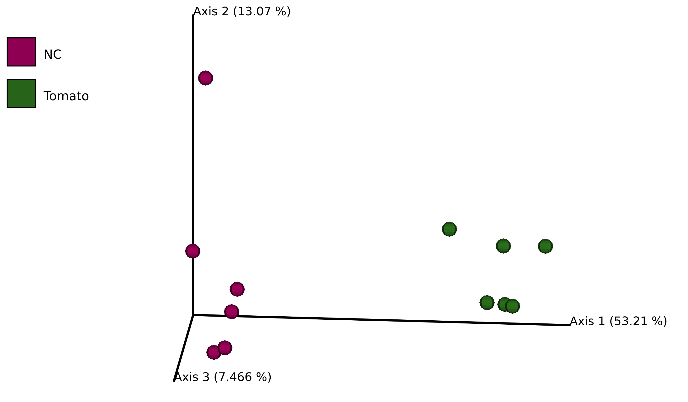
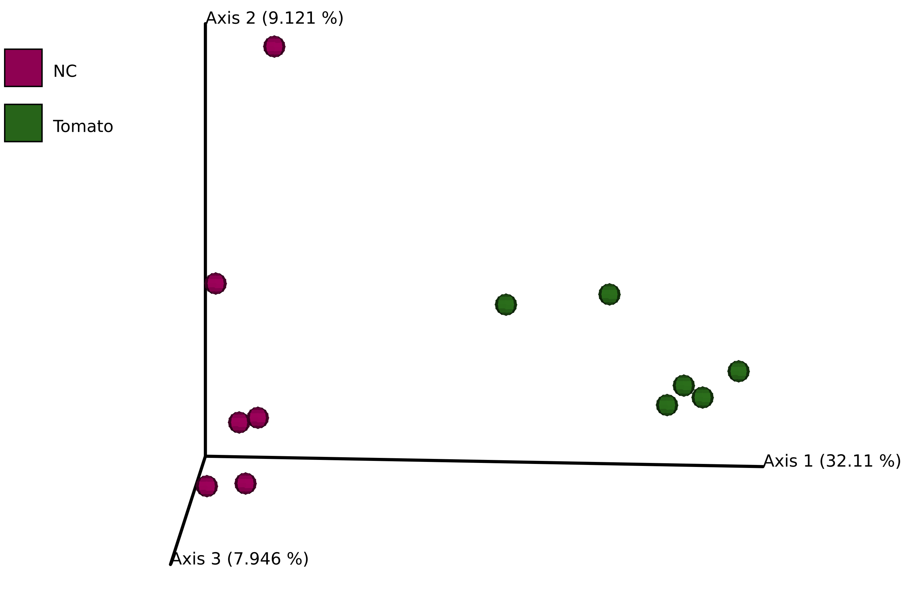
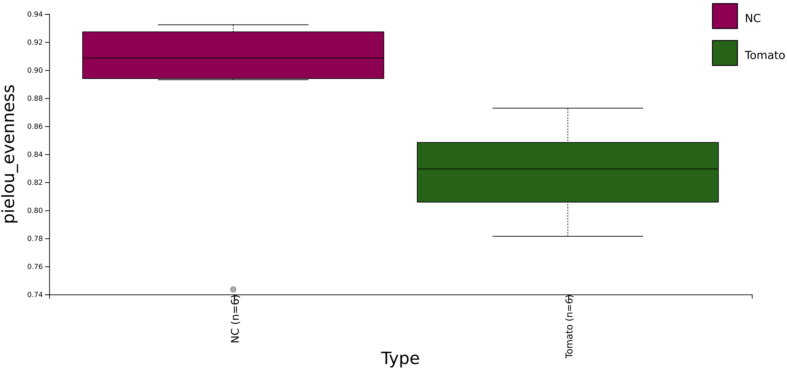
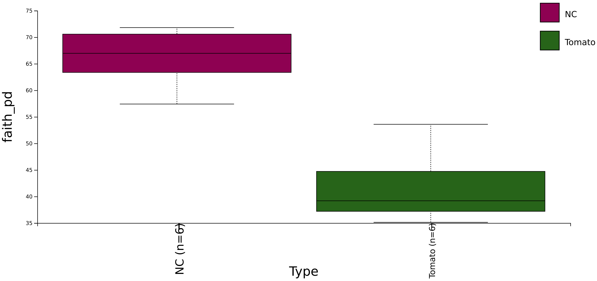
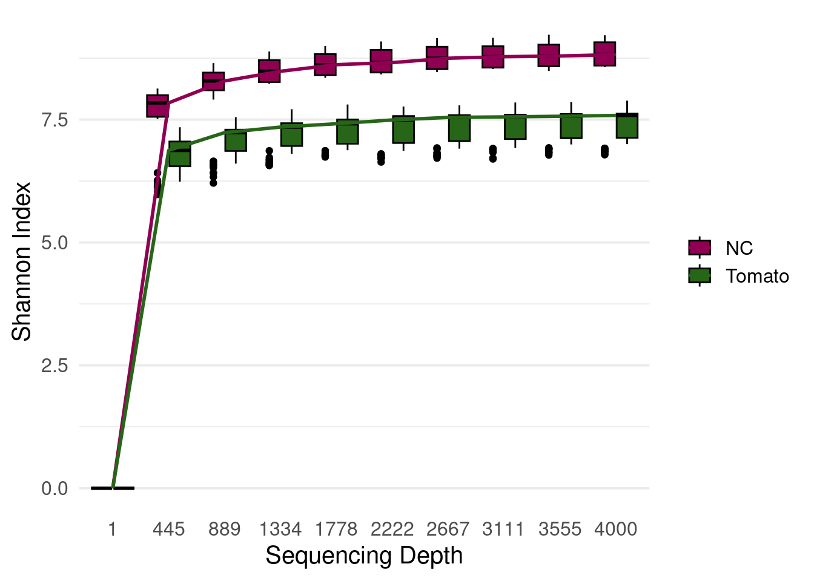
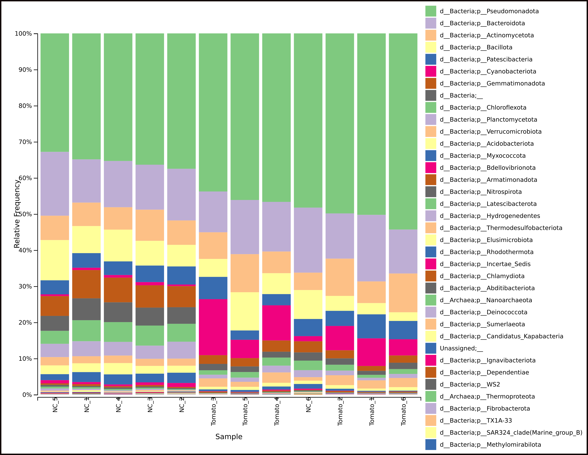

conda activate qiime2-amplicon-2024.10Metabarcoding: Tomate 16S usando Qiime2
Tomate 16S
Datos de partida “Disentangling the genetic basis of rhizosphere microbiome assembly in tomato”
Para este tutorial vamos a utilizar Qiime2, aquí lo puedes instalar según sea tu sistema operativo. Para los siguientes pasos vamos a autilizar la distribución “amplicon”. Este tutorial se hizo utilizando el sistema operativo Ubuntu 22.04.5 LTS, en un equipo con 24 Gb de RAM Intel® Core™ i7-3610QM CPU @ 2.30GHz × 8. Todo se hizo usando la terminal.
Una vez instalado qiime activa el ambiente conda.
Primer paso: Genera una carpeta (directorio) exclusiva para llevar a cabo el proyecto, en este caso el nombre de la carpeta es 2025_Demo_tomato_16S, en ella se va generar una carpeta para guardar los genomas 16S que tendrá por nombre data.
Lo genomas 16S los podrás encontrar aquípara descargar.
A continuación.
mkdir 2025_Demo_tomato_16S
cd 2025_Demo_tomato_16S
mkdir dataImportar datos pareados con Qiime2
Vamos a generar un archivo manifiesto en el vamos a indicar la localización de las lecturas pareadas. El archivo se ve de la siguiente manera:
# A tibble: 12 × 3
`sample-id` `forward-absolute-filepath` `reverse-absolute-filepath`
<chr> <chr> <chr>
1 Tomato_1 $PWD/data/Tomato_1_R1.fastq.gz $PWD/data/Tomato_1_R2.fastq.gz
2 Tomato_2 $PWD/data/Tomato_2_R1.fastq.gz $PWD/data/Tomato_2_R2.fastq.gz
3 Tomato_3 $PWD/data/Tomato_3_R1.fastq.gz $PWD/data/Tomato_3_R2.fastq.gz
4 Tomato_4 $PWD/data/Tomato_4_R1.fastq.gz $PWD/data/Tomato_4_R2.fastq.gz
5 Tomato_5 $PWD/data/Tomato_5_R1.fastq.gz $PWD/data/Tomato_5_R2.fastq.gz
6 Tomato_6 $PWD/data/Tomato_6_R1.fastq.gz $PWD/data/Tomato_6_R2.fastq.gz
7 NC_1 $PWD/data/NC_1_R1.fastq.gz $PWD/data/NC_1_R2.fastq.gz
8 NC_2 $PWD/data/NC_2_R1.fastq.gz $PWD/data/NC_2_R2.fastq.gz
9 NC_3 $PWD/data/NC_3_R1.fastq.gz $PWD/data/NC_3_R2.fastq.gz
10 NC_4 $PWD/data/NC_4_R1.fastq.gz $PWD/data/NC_4_R2.fastq.gz
11 NC_5 $PWD/data/NC_5_R1.fastq.gz $PWD/data/NC_5_R2.fastq.gz
12 NC_6 $PWD/data/NC_6_R1.fastq.gz $PWD/data/NC_6_R2.fastq.gz Este archivo lo vamos a nombrar como tomato_manifest, este archivo es de tipo tab-separate-value. Puedes descargar el archivo manifiesto aquí.
Para importar los secuencias 16S pareadas vamos a utilizar el siguiente código:
qiime tools import \
--type 'SampleData[PairedEndSequencesWithQuality]' \
--input-path tomato_manifest \
--output-path paired-end-tomato-16s.qza \
--input-format PairedEndFastqManifestPhred33V2Una vez importadas las secuencias, vamos a realizar un preprocesmaiento con cutadapt para eliminar adapdores, qiime2 nos permite hacer esto utilizando la siguiente instrucción:
qiime cutadapt trim-paired \
--i-demultiplexed-sequences paired-end-tomato-16s.qza \
--p-front-f CCTACGGGNGGCWGCAG \
--p-adapter-f GGATTAGATACCCBDGTAGTC \
--p-front-r GACTACHVGGGTATCTAATCC \
--p-adapter-r CTGCWGCCNCCCGTAGG \
--p-match-read-wildcards \
--p-discard-untrimmed \
--o-trimmed-sequences trimmed_paired-end-tomato-16s.qza --p-cores 5Explicación del comando:
--i-demultiplexed-sequences paired-end-tomato-16s.qza
Este parámetro indica el archivo de entrada que contiene tus secuencias pareadas ya demultiplexadas. El archivo de entrada es
paired-end-tomato-16s.qza.Adaptadores para las lecturas forward y reverse
--p-front-f CCTACGGGNGGCWGCAG: Adaptador 5’ de las lecturas forward.--p-adapter-f GGATTAGATACCCBDGTAGTC: Adaptador 3’ de las lecturas forward.--p-front-r GACTACHVGGGTATCTAATCC: Adaptador 5’ de las lecturas reverse.--p-adapter-r CTGCWGCCNCCCGTAGG: Adaptador 3’ de las lecturas reverse.
--p-match-read-wildcards
Este flag permite que los comodines (como N, W, B, D, H, V) en los adaptadores coincidan con las bases en las secuencias de lectura.
--p-discard-untrimmed
Esta opción descarta las secuencias que no contienen los adaptadores especificados, asegurando que solo se conserven las lecturas correctamente recortadas.
--o-trimmed-sequences trimmed.qza
Define el archivo de salida en formato
QZA(trimmed_paired-end-tomato-16s.qza) que contendrá las secuencias recortadas.Qiimegenera un solo archivoQZAque puedes usar en pasos posteriores del análisis.
Explorar los archivos importados
Qiime permite generar un reporte HTML para ver la cantidad de lecturas por muestras y métricas generales de secuencia. Para ello podemos generar el siguiente archivo:
qiime demux summarize \
--i-data trimmed_paired-end-tomato-16s.qza \
--o-visualization summary_tomato_16s.qzvPara visualizar este archivo utiliza el siguiente código:
qiime tools view summary_tomato_16s.qzvDADA2
qiime dada2 denoise-paired \
--i-demultiplexed-seqs trimmed_paired-end-tomato-16s.qza \
--p-trunc-len-f 280 \
--p-trunc-len-r 260 \
--o-representative-sequences rep-seqs-dada2-tomato-16s.qza \
--o-table table-dada2-tomato-16s.qza \
--o-denoising-stats stats-dada2-tomato-16s.qza \
--p-n-threads 5Con esto podemos ver un reporte de la cantidad de lecturas filtradas:
qiime metadata tabulate \
--m-input-file stats-dada2-tomato-16s.qza \
--o-visualization stats-dada2-tomato-16s.qzv
qiime tools view stats-dada2-tomato-16s.qzvDespués de terminar el paso de filtrado de calidad, querrás explorar los datos que obtuviste. Este filtrado es importante porque elimina las secuencias de baja calidad o con errores, dejándote datos más confiables para trabajar. Para revisar esos datos, puedes usar dos comandos que te muestran resúmenes visuales fáciles de entender.
EXPERIMENT DESIGN
# A tibble: 13 × 4
`Sample-id` accession sra_run Type
<chr> <chr> <chr> <chr>
1 #q2:types categorical categorical categorical
2 Tomato_1 SRX13358040 SRR17174837 Tomato
3 Tomato_2 SRX13358039 SRR17174838 Tomato
4 Tomato_3 SRX13358038 SRR17174839 Tomato
5 Tomato_4 SRX13358037 SRR17174840 Tomato
6 Tomato_5 SRX13358036 SRR17174841 Tomato
7 Tomato_6 SRX13358035 SRR17174842 Tomato
8 NC_1 SRX13358032 SRR17174845 NC
9 NC_2 SRX13358026 SRR17174851 NC
10 NC_3 SRX13358024 SRR17174853 NC
11 NC_4 SRX13358022 SRR17174855 NC
12 NC_5 SRX13358630 SRR17174856 NC
13 NC_6 SRX13358517 SRR17174969 NC qiime feature-table summarize \
--i-table table-dada2-tomato-16s.qza \
--o-visualization table-dada2-tomato-16s.qzv \
--m-sample-metadata-file Experiment_Design.tsvqiime feature-table tabulate-seqs \
--i-data rep-seqs-dada2-tomato-16s.qza \
--o-visualization rep-seqs-dada2-tomato-16s.qzvEl comando
feature-table summarize, para cuando se cuenta conmetadata.
Este comando te ayuda a ver:
Cuántas secuencias hay en cada muestra: por ejemplo, cuántas secuencias tiene cada una de tus muestras biológicas.
Cuántas secuencias hay por característica: las características pueden ser cosas como tipos de bacterias o genes que encontraste, en caso de agregar metadatos.
Gráficos (histogramas): estos te muestran cómo se distribuyen las secuencias.
Estadísticas básicas: algunos números que resumen tus datos de forma general, para que tengas una idea rápida de lo que tienes.
El comando
feature-table tabulate-seqs
Este comando es útil porque:
Te da una lista que conecta cada ID de característica (un código único para cada característica) con la secuencia de ADN que representa.
Además, te ofrece enlaces para buscar esas secuencias en una base de datos grande llamada NCBI nt.
¿Por qué son útiles estos comandos?
El primero te da una visión general de tus datos: cuántas secuencias tienes y cómo están organizadas.
El segundo te permite investigar a fondo las características que te interesen, conectando los códigos con las secuencias reales y dándote herramientas para explorar más.
Medidas de diversidad
qiime diversity core-metrics-phylogenetic \
--i-phylogeny rooted-tree-dada2-tomato-16s.qza \
--i-table table-dada2-tomato-16s.qza \
--p-sampling-depth 16890 \
--m-metadata-file Experiment_Design.tsv \
--output-dir core-metrics-resultsDistancia Bray Curtis

Distancia de Jaccard

Alfa diversidad
qiime diversity alpha-group-significance \
--i-alpha-diversity core-metrics-results/faith_pd_vector.qza \
--m-metadata-file Experiment_Design.tsv \
--o-visualization core-metrics-results/faith-pd-group-significance.qzvqiime diversity alpha-group-significance \
--i-alpha-diversity core-metrics-results/evenness_vector.qza \
--m-metadata-file Experiment_Design.tsv \
--o-visualization core-metrics-results/evenness-group-significance.qzvEveness (Uniformidad de grupo)

| Group 1 | Group 2 | H | p-value | q-value |
|---|---|---|---|---|
| NC (n=6) | Tomato (n=6) | 3.692308 | 0.05466394 | 0.05466394 |
Faith’s Phylogenetic Diversity (PD)

| Group 1 | Group 2 | H | p-value | q-value |
|---|---|---|---|---|
| NC (n=6) | Tomato (n=6) | 8.307692 | 0.003947752 | 0.003947752 |
Beta diversidad
qiime diversity beta-group-significance \
--i-distance-matrix core-metrics-results/unweighted_unifrac_distance_matrix.qza \
--m-metadata-file Experiment_Design.tsv \
--m-metadata-column Type \
--o-visualization core-metrics-results/unweighted-unifrac-body-site-significance.qzv \
--p-pairwiseqiime diversity beta-group-significance \
--i-distance-matrix core-metrics-results/unweighted_unifrac_distance_matrix.qza \
--m-metadata-file Experiment_Design.tsv \
--o-visualization core-metrics-results/unweighted-unifrac-significance.qzv \
--p-pairwiseUnweighted UniFrac Distance: PERMANOVA


| Group 1 | Group 2 | Sample size | Permutations | pseudo-F | p-value | q-value |
|---|---|---|---|---|---|---|
| NC | Tomato | 12 | 999 | 5.749228 | 0.008 | 0.008 |
Alfa rarefacción
qiime diversity alpha-rarefaction \
--i-table table-dada2-tomato-16s.qza \
--i-phylogeny rooted-tree-dada2-tomato-16s.qza \
--p-max-depth 4000 \
--m-metadata-file Experiment_Design.tsv \
--o-visualization alpha-rarefaction-dada2-tomato-16s.qzvObserved Features
Los rasgos observados (Observed features) son una métrica de diversidad alfa fundamental que cuantifica la riqueza de una comunidad microbiana contando el número de unidades taxonómicas operativas (OTU) distintas o variantes de secuencia de amplicón (ASV) presentes en una sola muestra.

Shannon
El índice de diversidad de Shannon es una métrica comúnmente utilizada para analizar la diversidad alfa, ya que considera tanto la riqueza de especies como la abundancia relativa de cada taxón dentro de una muestra.
Taxonomía
qiime rescript get-silva-data \
--p-version '138.2' \
--p-target 'SSURef_NR99' \
--o-silva-sequences silva-138.2-ssu-nr99-rna-seqs.qza \
--o-silva-taxonomy silva-138.2-ssu-nr99-tax.qzaqiime rescript reverse-transcribe \
--i-rna-sequences silva-138.2-ssu-nr99-rna-seqs.qza \ --o-dna-sequences silva-138.2-ssu-nr99-seqs.qzaqiime rescript cull-seqs \
--i-sequences silva-138.2-ssu-nr99-seqs.qza \
--o-clean-sequences silva-138.2-ssu-nr99-seqs-cleaned.qzaqiime rescript filter-seqs-length-by-taxon \
--i-sequences silva-138.2-ssu-nr99-seqs-cleaned.qza \
--i-taxonomy silva-138.2-ssu-nr99-tax.qza \
--p-labels Archaea Bacteria Eukaryota \
--p-min-lens 900 1200 1400 \
--o-filtered-seqs silva-138.2-ssu-nr99-seqs-filt.qza \ --o-discarded-seqs silva-138.2-ssu-nr99-seqs-discard.qzaqiime rescript dereplicate \
--i-sequences silva-138.2-ssu-nr99-seqs-filt.qza \
--i-taxa silva-138.2-ssu-nr99-tax.qza \
--p-mode 'uniq' \
--o-dereplicated-sequences silva-138.2-ssu-nr99-seqs-derep-uniq.qza \
--o-dereplicated-taxa silva-138.2-ssu-nr99-tax-derep-uniq.qzaqiime feature-classifier extract-reads \
--i-sequences silva-138.2-ssu-nr99-seqs-derep-uniq.qza \
--p-f-primer GTGYCAGCMGCCGCGGTAA \
--p-r-primer GGACTACNVGGGTWTCTAAT \
--p-n-jobs 5 \
--p-read-orientation 'forward' \
--o-reads silva-138.2-ssu-nr99-seqs-515f-806r.qzaiime rescript dereplicate \
--i-sequences silva-138.2-ssu-nr99-seqs-515f-806r.qza \
--i-taxa silva-138.2-ssu-nr99-tax-derep-uniq.qza \
--p-mode 'uniq' \
--o-dereplicated-sequences silva-138.2-ssu-nr99-seqs-515f-806r-uniq.qza \
--o-dereplicated-taxa silva-138.2-ssu-nr99-tax-515f-806r-derep-uniq.qzaqiime feature-classifier fit-classifier-naive-bayes \
--i-reference-reads silva-138.2-ssu-nr99-seqs-515f-806r-uniq.qza \
--i-reference-taxonomy silva-138.2-ssu-nr99-tax-515f-806r-derep-uniq.qza \
--o-classifier silva-138.2-ssu-nr99-515f-806r-classifier.qzaDiversidad/abundancía
qiime feature-classifier classify-sklearn \
--i-classifier silva-138.2-ssu-nr99-515f-806r-classifier.qza \
--i-reads rep-seqs-dada2-tomato-16s.qza \
--o-classification taxonomy.qzaqiime metadata tabulate \
--m-input-file taxonomy.qza \
--o-visualization taxonomy.qzvqiime taxa barplot \
--i-table table-dada2-tomato-16s.qza \
--i-taxonomy taxonomy.qza \
--m-metadata-file Experiment_Design.tsv \
--o-visualization taxa-bar-plots.qzv